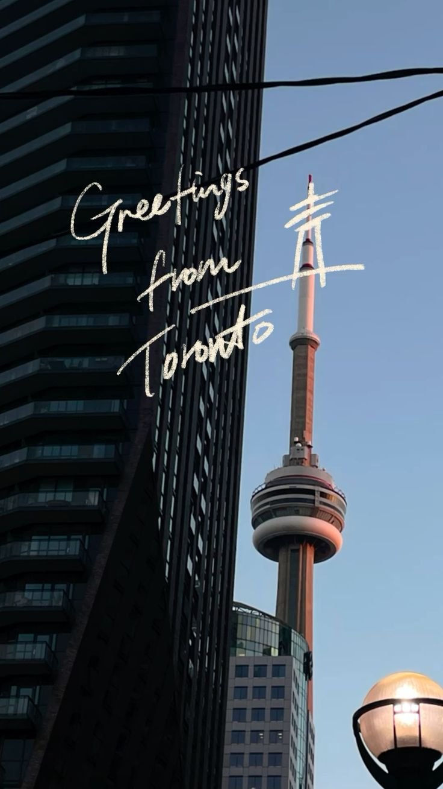

Sitio web oficial
Con 3 años en el mundo de la costura y casi 4 años en el diseño gráfico, he construido un camino creativo
lleno de experiencias que han moldeado mi estilo y mi forma de ver el arte. A lo largo de este recorrido
he pasado por distintos espacios laborales, desarrollando habilidades en la costura, el diseño gráfico,
el modelaje y la atención al cliente como mesera, aprendiendo a conectar con las personas y a expresar ideas
desde diferentes perspectivas.
Para mí, la creatividad no tiene un solo formato: puede verse en una prenda bien confeccionada, en un diseño
que comunica una idea o en la seguridad que transmite una persona frente a una cámara. Cada experiencia ha
sido una pieza que construye mi identidad profesional y artística.
Creo en la versatilidad, en el poder de reinventarse y en transformar cada oportunidad en una forma de crear,
aprender y dejar una huella auténtica.

| Producto | Precio (COP) | Descripción |
|---|---|---|
| Accesorios hechos a mano | $25,000 | Accesorios artesanales elaborados con materiales creativos |
| Carteras artesanales | $80,000 | Carteras hechas a mano con diseños únicos |
| Ramos de flores eternas | $60,000 | Ramos decorativos que no se marchitan, ideales para regalos |
| Set de accesorios | $45,000 | Conjunto de accesorios combinados |
| Cartera personalizada | $100,000 | Cartera artesanal personalizada según el diseño del cliente |